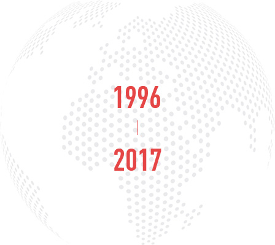
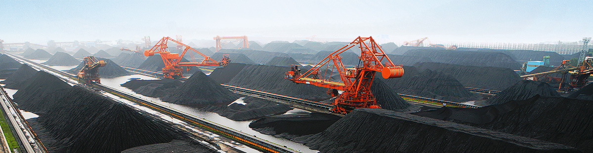

QINFA GROUP
秦发集团
是一家民营煤炭企业，成立于1996年，于2009年在香港主板上市。
秦发集团的主营业务是动力煤生产、选配、运输、销售、贸易。
经过多年发展，秦发集团摸索出一套高效运作的动力煤产运销管理模式，培养出一支高效专业的动力煤管理团队。
随着中国经济由高速转为中高速，互联网+战略、一带一路战略、绿色能源战略的推出并实施，
广东自贸区的设立，集团迎来了新的发展机遇。
集团已于近几年经济低谷时期布局了互联网、智能物流、煤电一体化、一带一路、自贸区等棋子，
随着国家战略的转型，集团也进入了转型的新时代。

